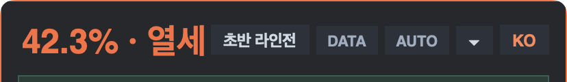
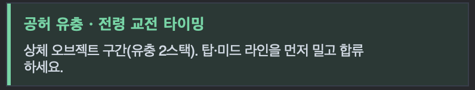
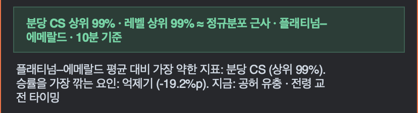

LoL Pacemaker
An AI coach that reads in-game data and plans your strategy in real time
Features
-

Live win rate
Calculates win probability every 2 seconds from 16 live scoreboard stats (kills, CS, levels, dragons, voidgrubs, towers) locally in under 1ms with zero FPS drop.
-

Live macro calls
Tracks enemy jungler death (no Smite), 5v3 windows, Dragon Soul/Baron/Grubs timings, recall gold, and anti-heal/penetration counters — showing up to 3 top calls (auto-switches for ARAM).
-

Tier rank & weakness briefing
Shows your live CS/min, level, and kill participation percentile against your tier curve and highlights the #1 factor dragging down your win rate (%p).
-

Modular, non-intrusive HUD
Stays hidden in lobby/desktop and appears only during a match. Fold or expand with the orange PACE MAKER button or F9, and toggle or drag each panel independently.
Download
LoL Pacemaker for Desktop
A desktop app that shows live win rate and calls on top of your match. Free, no ads.
Windows
Installer for Windows 10 / 11. Once installed, the HUD appears by itself when a League match starts.
macOS
App for Apple Silicon Macs (M1 or later).
If it is blocked, open System Settings → Privacy & Security and click “Open Anyway” at the bottom.
- STEP 1
Get the installer
Use the button above. If Windows shows a security warning, click More info → Run. It appears because this free open-source app has no paid certificate.
- STEP 2
Install and first run
Install with auto-start left on. The first run asks once whether to share anonymous data (off by default).
- STEP 3
Set League to Borderless
In League, set Settings → Video → Window Mode to Borderless. The HUD appears when the match starts; F9 folds it.
Global Riot Match Lookup
KR · NA · EUW · JP · BR · LAN마이페이지
Riot IDHow to Apply (4 Simple Steps)
Supported modes: Ranked · Normal · ARAM · Practice Tool


Troubleshooting & FAQ
No matching article. Ask the assistant or send us a message.